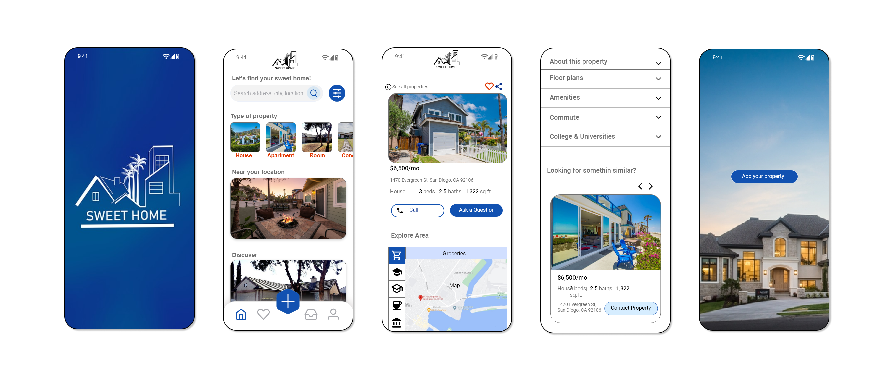

Case Study
Fictional Rental Homes Responsive Website, made as part of my
Google UX Design Certificate.
My Role:
UX/UI Designer, UX Researcher
Project Duration:
2.5 month
Responsibilities:
User research, Wireframing, Prototyping, Usability testing.
Overview
Sweet Home is a Real State Responsive Website that offers plenty of solutions to facilitate the house renting process, from gathering information to scheduling visits, also allows to calculate the commute and explore the area of a selected house to have a better visibility of the surroundings.
What's the Problem
Solutions
The Challenge
This project has been a big learning experience for me, where I've had the opportunity to tackle multiple challenges. It's been like solving a bunch of puzzles since the real estate industry is incredibly wide and diverse to analyze.
I've enjoyed every step of the way and I've also gained valuable insights and problem-solving skills, which have greatly enriched my understanding of this specific field.
User Research
I've created a focused survey with precise questions designed to gather information and improve understanding about the challenges and frustrations users encounter while searching for their ideal rental home.
To get more people involved, I shared the survey on LinkedIn, which helped bring in a wider group of participants. Additionally, I received valuable input from family members and friends who have recently undergone the process of moving to a new rental home. Their participation in the survey allowed me to gather the necessary data, providing a solid foundation for initiating my project."
User Research Pain Points
1
“ Can be very difficult to find a good quality apartment under budget”
2
“ I struggle finding a house no too far from my work with all the conditions I need”
3
“It’s hard to guess how is the neighborhood like when you don’t know the city where are you moving out. I would like to have a better visibility of the area where I’m searching”
4
“I only want to communicate with the house owner”, “Real Estate agents are usually very abusive with prices and with the conditions to be accepted”
Personas
After conducting the users research I realized that people face variety of problems when they look for a rental house, so I decided to create two personas in order to empathize and visualize better different situations, goals and frustrations.

Name: Hanna
Age: 36
Hometown: San Diego, CA.
Occupation: Accountant
Hanna is a busy accountant and mother of two children who needs to find a home near her work because she doesn’t want to waste so much time in her commute.
She feels Frustrated trying to locate a good quality house at an affordable price within a very expensive housing market.
She would also like a home with patio since She has a dog and two children.
GOALS
- Find a home not too far from my work
- Find a place with at least two bedrooms and a patio in an affordable price.
- Find a place where pets are allowed.
FRUSTRATIONS
- Worried about being priced out
- Not many option where pets are allowed
- "It's very hard to find a home with all I need close to my work"
Name: Liam
Age: 21
Hometown: Tucson, AZ
Occupation: Student
Liam is a student who needs to find a home in Seattle because he just got accepted in the Seattle University School of law.
Eager to relocate to a new city, he's enthusiastic about finding a secure residence conveniently close to the university. His desire is to have the flexibility to explore the neighborhoods surrounding potential homes.
His intention is to secure a studio apartment remotely, avoiding the need for an in-person visit. However, his primary challenge lies in reaching out to property owners directly, as real estate agents often tend to inflate prices and impose stringent acceptance terms.
GOALS
- Find a studio not too far from his University
- Look for a safe place to live
- Find a trustworthy landlord
FRUSTRATIONS
- Contacting the homeowners proves to be a challenge for him.
- He faces difficulty locating a suitable studio without the need for an in-person visit.
- Exploring the neighborhoods of potential rental places presents another obstacle."
User Journey Map
This step of creating the user journey map was very helpful to me to get closer to users problems and analyze improvements opportunities.
Information Architecture
Low Fidelity Wireframes
After drawing many papers wireframes and analyzing and comparing different rental homes websites, I started my digital low fidelity wireframes adapting solutions to users pain points. Then I have connected wireframes to get the low fidelity prototype.

Usability Study Low Fidelity Prototype
Once my prototype was done I was ready to conduct the usability study which help me to have a better understanding about participants needs. I have carried out this step with 5 participants, 3 of whom attended via zoom and 2 in person.
Insights
Add map in commute section
4 of 5 participants want to see a map in the commute feature
Add more filter options
3 of 5 participants suggested adding more options to the filter, such as patio, balcony, grill and garage
Change the order of Colleges & Universities section together with Explore Area
2 of 5 participants suggested changing the order or some features for better understanding and user experience.
Refining the Design
Add map in commute section
My original idea was to use the map of the explore area section to calculate the commute as well, but after the usability study I decided to add a specific map for the commute because participants were getting confused .

Add more filter options
I have added some more options to my first design filter because participants thought that would be very useful to have them.
Change the order of Colleges & Universities section together with Explore Area
I reorganized the "College & Universities section" to enhance the website's structure, relocating this feature to the bottom of the "explore area" to improve its overall flow.
High Fidelity Wireframes
After the usability study I have created the high fidelity wireframes and prototypes. I made a logo with Adobe Illustrator to give a personal identity to my responsive website and I have added some interesting icons to continue with the branding. Beside I have chosen a color pallet being the main color a deep blue with the purpose of transmitting a sense of reliability and trustworthiness to potential renters.
Solutions
I've implemented a variety of filters to enhance the user's search experience, enabling them to pinpoint precisely what they're looking for.
With the Explore Area Section I've developed, people can now analyze the surroundings of the home previously selected.
Users can now easily determine commute times from their selected home to their workplaces, schools, and other destinations.
Accessibility
1
I have adapted my color palette to make my website more accessible by using a contrast checker tool.
2
I've incorporated a language-switching feature to enhance website accessibility for individuals from diverse nationalities who may face challenges with the English language. This not only improves user experience but also broadens our market reach to potential users.
3
I've organized my content meticulously with the use of headers to make it significantly more comprehensible.